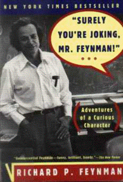

Surely, You're Joking, Mr. Feynman!by Richard Feynman
as told to Ralph Leighton
publisher: W.W. Norton & Company
Non-fiction, 346 pages | 
(book cover art, Copyright ©1997 Richard P. Feynman and Ralph Leighton)
Used with Permission. |
Return to the Book MenuPrevious|Next
Description:
This is a collection of stories from the life of Richard Feynman,
often considered "the best mind since Einstein." They speak volumes about
his dedication to science, his life habits, ...and his sense of humor.
Recommended for: People who would like to learn about
the life of a "curious character" who won the Nobel Prize. Future scientists,
creative thinkers, and other troublemakers.
Did-you-read questions:
Deadline: February 1, 2005.
These should be easy questions, but you should have the questions ready and keep an eye out during your reading. Each question should be answered with 1-2 sentences.
Note: these questions are not probably not the most important part of the book! Your essay will not have to cover these questions!
- What poor choice did Feynman make that led to the title of the book? (Why
is it a bad choice?)
- With whom was Feynman exchanging coded messages during the Manhattan Project?
- On what basis did the army refuse to take Feynman for the post-war draft?
- On what basis did Feynman refuse the University of Chicago's final offer?
- What was the purpose of Feynman's committee for the California State Board
of Education?
Report Questions:Deadline: Peer Review Session on February 8, 2005; paper due February 10, 2005.
You should write a 3 - 4 page essay on one of the following questions. Your essay should include examples and references to the book, unless otherwise specified. Page number references are sufficient for citing material from the primary book. If you use outside materials, cite your sources in full. If you would rather write on a different topic, you may, but clear it with Mr. Howe or Ms. Sullivan first.
- When you read that the narrator won the Nobel Prize in Physics, you probably
developed some idea of what he would be like. (If you are reading this
question before you read the book, take a moment to think about it, and
jot down some notes for yourself.) What aspects of his character were most
similar to your expectations? What aspects were most different? Do you
think that he makes a good role model?
- In several parts of the book, Richard Feynman discusses his opinions
of the difference between good science and bad science. ( A couple of examples
are in "O Americanos..." and "Cargo Cults..." I'm sure you can find others.)
What do you think about his opinions? What can you take from this book
to improve your own learning and science?
- Do you consider Richard Feynman a humble person, or an arrogant one? Use
examples of the book to make your case.
- Richard Feynman had many great things happen to him in his life: fame,
fortune, intellectual freedom, success, even happiness. Which of these
things do you think was most important to him, or was there something even
more important to him? Use examples!
Graphic and Presentation:
Deadline: February 21 - March 3, 2005.You will give a 10 minute presentation on both of the following:
- Convince your peers that they should (or should not) read this book. (This may include a brief summary of the book.) Give examples of what was cool or worthwhile in the book, and what you got out of it (or didn't).
- Describe a (realistic) science idea that you learned about in this book, citing information from at least 2 external sources (other than the dictionary). If you would like help choosing or understanding an idea from your book, you are invited to come talk to Mr. Howe or Ms. Sullivan.
Note: This presentation should not be just a reading of your paper!Along with this presentation, you should have a graphic that will go with it. A Power Point presentation is recommended, but if you have a special idea for a something else, such as a model, an original video presentation, or a well done drawing/ painting/ sculpture/ etc., you may do so, provided it involves a similar level of effort and polish. Speak to Mr. Howe or Ms. Sullivan first if you are considering an alternate graphic format to the Power Point.
Return to the Book MenuPrevious|Next